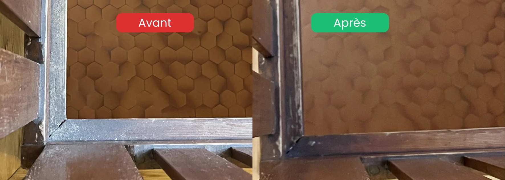

- Poussière fine : elle se redépose plusieurs fois, prévoyez 2 à 3 passages
- Ordre à suivre : du plafond vers le sol, du fond vers la sortie
- Le sol : une simple panosse humide ne suffit pas, il faut un décapage adapté
- Zones oubliées : grilles de ventilation, rails de fenêtres, dessus des portes
- Enjeu santé : la poussière de ciment est nocive pour les poumons, surtout pour les enfants
Pourquoi un nettoyage après rénovation est si particulier
Un nettoyage classique ne suffit jamais après des travaux. La rénovation génère une poussière extrêmement fine qui s'infiltre partout et reste en suspension dans l'air pendant des jours.
Trois différences majeures avec un ménage normal :
- La poussière de chantier est microscopique : plâtre, ciment, bois poncé. Elle traverse les chiffons classiques et se redépose en continu
- Les résidus sont collants ou durcis : peinture, colle, joint, silicone nécessitent des techniques spécifiques
- Les allergènes sont invisibles : particules fines qui irritent les voies respiratoires et déclenchent des allergies
L'ordre à suivre pour un nettoyage après travaux efficace
L'erreur la plus fréquente est de nettoyer dans le désordre. Résultat : on resalit des zones déjà propres. Voici la méthode professionnelle.
| Étape | Action | Pourquoi dans cet ordre |
|---|---|---|
| 1. Gros déchets | Évacuer gravats, cartons, protections | Libère l'espace de travail |
| 2. Plafonds et murs | Dépoussiérer du haut vers le bas | La poussière tombe vers le sol |
| 3. Fenêtres et cadres | Nettoyer vitres, rails, encadrements | Avant les sols, car ça fait tomber des résidus |
| 4. Surfaces et meubles | Dépoussiérer puis laver | Capturer la poussière redéposée |
| 5. Sols | Aspirer (filtre HEPA) puis décaper | En dernier, car tout le reste y tombe |
| 6. Second passage | Reprendre la poussière redéposée | La poussière fine remonte et retombe |
Cet ordre évite de recommencer plusieurs fois le même travail.
La poussière fine : l'ennemi numéro un
C'est le plus grand défi du nettoyage après rénovation. La poussière fine de chantier a une particularité : elle reste en suspension dans l'air et se redépose lentement, parfois pendant 48 à 72 heures.
Pour la maîtriser :
- Utilisez un aspirateur avec filtre HEPA : un aspirateur classique recrache les particules fines dans l'air
- Privilégiez le nettoyage humide : un chiffon microfibre légèrement humide capture la poussière au lieu de la déplacer
- Travaillez en plusieurs passages : un premier nettoyage, une pause de quelques heures, puis un second passage
- Aérez régulièrement : mais pas pendant le nettoyage, sinon vous faites entrer ou circuler de nouvelles particules
Le sol après rénovation : pourquoi la panosse ne suffit pas
C'est l'erreur la plus répandue, et la plus trompeuse. Après des travaux, une fine couche de poussière de ciment s'incruste dans le sol, comme imprimée dans le carrelage. Un simple nettoyage humide à la panosse ne fait que la déplacer en surface.
Le piège : juste après le passage de la panosse, le sol paraît brillant et propre. Mais une fois sec, la couche fine réapparaît, comme un voile blanchâtre qui ressurgit. On a beau recommencer, le résultat est le même.
Pourquoi il faut absolument l'éliminer :
- C'est une accumulation de poussière fine de ciment et de résidus qui ne part pas au nettoyage classique
- Elle est nocive pour les poumons à long terme, car les particules se remettent en suspension à chaque passage
- Elle est particulièrement dangereuse pour les enfants, qui jouent et rampent au sol
- Elle réapparaît indéfiniment tant qu'elle n'est pas traitée en profondeur
La solution : un décapage du sol avec un produit adapté au revêtement. Cette étape dissout et retire la couche incrustée, là où la panosse ne fait que la lisser. Le produit doit être choisi selon le type de sol (carrelage, parquet, vinyle) pour ne pas l'abîmer.

Comment enlever les traces spécifiques de travaux
Chaque type de résidu demande une technique adaptée.
Traces de peinture
- Sur le verre : grattoir à lame en biais, sans rayer
- Sur le carrelage : chiffon imbibé d'eau chaude savonneuse, puis grattoir doux si nécessaire
- Fraîche : nettoyer immédiatement à l'eau (peinture acrylique) avant durcissement
Résidus de plâtre et de ciment
- Aspirer d'abord à sec, jamais à l'eau (le plâtre mouillé fait une pâte)
- Puis nettoyer à l'éponge humide en rinçant souvent
Traces de colle et d'adhésif
- Décoller délicatement à chaud (sèche-cheveux) ou avec un produit adapté
- Tester toujours sur une zone discrète avant
Taches de joint et de silicone
- Retirer mécaniquement l'excédent durci
- Nettoyer avec un produit dégraissant adapté à la surface
Les zones que tout le monde oublie
Après des travaux, certaines zones concentrent la poussière et sont systématiquement négligées :
- Grilles de ventilation et VMC : la poussière s'y accumule massivement
- Rails et gorges de fenêtres : résidus de plâtre coincés
- Dessus des portes et des cadres : invisibles mais très poussiéreux
- Radiateurs : entre les éléments et derrière
- Interrupteurs et prises : traces de doigts et poussière
- Plinthes : la poussière fine s'y dépose en couche épaisse
- Intérieur des placards : même fermés, la poussière s'infiltre
Faut-il faire appel à un professionnel ?
Pour une petite pièce rénovée, un nettoyage soi-même est faisable avec le bon matériel et de la patience. Mais certaines situations justifient l'intervention d'une entreprise spécialisée.
Le professionnel devient le choix le plus efficace quand :
- La surface est grande (appartement ou maison entière rénovés)
- Les travaux étaient lourds (poussière de ponçage, ciment, gros œuvre)
- Vous emménagez rapidement et n'avez pas le temps des passages multiples
- Vous voulez un logement immédiatement sain (allergies, enfants en bas âge)
- Le logement doit être rendu propre pour une location ou une vente
FAQ – Nettoyage après rénovation
Combien de temps faut-il pour nettoyer après une rénovation ?
Cela dépend de la surface et de l'ampleur des travaux. Pour une pièce, comptez une demi-journée avec plusieurs passages. Pour un appartement entier après de gros travaux, il faut souvent 1 à 2 journées complètes, car la poussière fine nécessite des passages répétés sur 48 à 72 heures.
Pourquoi le sol reste-t-il blanchâtre même après l'avoir lavé ?
Parce qu'une couche de poussière de ciment s'est incrustée dans le revêtement. Un nettoyage humide classique la déplace sans la retirer : le sol paraît propre une fois mouillé, puis le voile blanc réapparaît en séchant. Seul un décapage avec un produit adapté élimine réellement cette couche.
Pourquoi la poussière revient-elle sans cesse après les travaux ?
La poussière de chantier est extrêmement fine et reste en suspension dans l'air pendant plusieurs jours. Elle se redépose progressivement sur les surfaces déjà nettoyées. C'est pourquoi un seul passage ne suffit jamais : il faut nettoyer, attendre que les particules retombent, puis recommencer.
La poussière de chantier est-elle dangereuse pour la santé ?
Oui. Les particules fines de ciment, de plâtre et de bois poncé irritent les voies respiratoires et peuvent être nocives pour les poumons sur le long terme. Le risque est plus élevé pour les enfants, qui évoluent près du sol. Un nettoyage en profondeur, sol compris, est essentiel avant de réhabiter le logement.
Le nettoyage après rénovation est-il inclus dans les travaux ?
Généralement non. Les entreprises de construction évacuent les gros déchets mais ne réalisent pas le nettoyage fin du logement. C'est une prestation distincte, souvent confiée à une entreprise de nettoyage spécialisée pour obtenir un logement réellement habitable.
En résumé
Le nettoyage après rénovation demande une méthode précise : respecter l'ordre du haut vers le bas, maîtriser la poussière fine avec plusieurs passages et un aspirateur HEPA, et surtout décaper le sol pour retirer la couche de ciment incrustée qu'une simple panosse laisse derrière elle. Cette couche, invisible mais bien réelle, est nocive pour les poumons, en particulier pour les enfants. Pour de gros travaux ou un emménagement rapide, une entreprise spécialisée garantit un logement immédiatement sain.